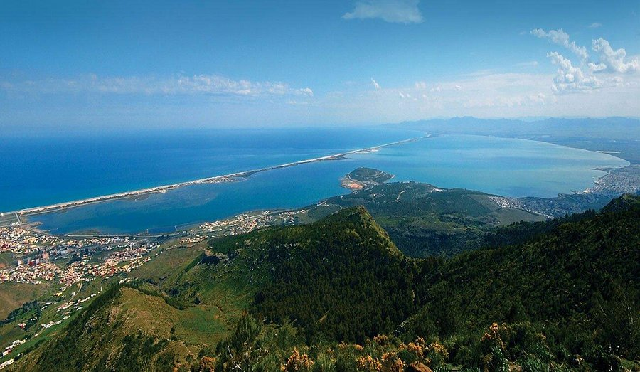

Over Nador
Nador is een havenstad aan de Middellandse Zee, gelegen in het noordoosten van Marokko, dichtbij de Spaanse enclave Melilla. De stad heeft een rijke geschiedenis en een strategische ligging die haar door de jaren heen tot een belangrijk handelscentrum heeft gemaakt. Nador staat bekend om zijn pittoreske stranden, prachtige natuur en de invloed van zowel Arabische als Europese culturen.
Bezienswaardigheden in Nador
Nador biedt bezoekers een verscheidenheid aan prachtige natuurlijke bezienswaardigheden en culturele hotspots.
- Lagune van Nador: Een van de meest iconische bezienswaardigheden van de regio, bekend om zijn rijke fauna en flora, en het is een belangrijke trekpleister voor vogelaars.
- Plage de Sfiha: Een prachtig strand aan de Middellandse Zee, ideaal voor ontspanning en watersporten.
- Medina van Nador: De oude binnenstad biedt een schilderachtig uitzicht met smalle straatjes, lokale markten en traditionele winkels.
- Cap de l'eau: Een prachtig natuurreservaat en een ideaal gebied voor wandelingen en vogelspotten.
- Jebel Boujraf: Een berg die niet alleen een prachtig uitzicht biedt over Nador, maar ook een geweldige plek is voor een hike in de natuur.
Wat te doen in Nador?
Nador biedt een scala aan activiteiten voor elke reiziger, van natuur en ontspanning tot culturele ontdekkingen.
- Geniet van een rustige dag op een van de stranden van Nador, zoals Plage de Sfiha of Plage de Boukhalef.
- Verken de natuur in de Lagune van Nador en maak een boottocht om de rijke biodiversiteit te ontdekken.
- Wandel of maak een trektocht naar de top van de Jebel Boujraf voor panoramische uitzichten over de stad en de omliggende gebieden.
- Bezoek de lokale markten in de Medina en ontdek handgemaakte producten, kruiden en traditionele Marokkaanse ambachten.
- Verken het nabijgelegen natuurpark Cap de l'eau en geniet van een dag in de ongerepte natuur van Nador.
Cultuur & Geschiedenis
Nador heeft een rijke culturele achtergrond die zowel Arabische, Berberse als Europese invloeden weerspiegelt. De stad heeft eeuwenlang een strategische positie ingenomen aan de Middellandse Zee en werd vaak bezocht door Europese ontdekkingsreizigers, handelaren en kolonisten. De stad was historisch gezien een belangrijk centrum voor de handel met Spanje, gezien de nabijheid van de Spaanse enclave Melilla.
De inwoners van Nador zijn trots op hun Berberse erfgoed, wat zichtbaar is in de lokale keuken, muziek en ambachten. De stad heeft zich in de afgelopen decennia ontwikkeld, maar behoudt nog steeds een sterke band met de traditionele cultuur van de Rif-regio.
Nador is een stad in beweging, met een toenemende invloed van toerisme en een bloeiende haven die het centrum van handel en commercie in de regio versterkt. Naast zijn historische betekenis is Nador een belangrijke culturele bestemming, met verschillende lokale festivals, muziek- en kunstevenementen die de diversiteit en de gastvrijheid van de stad weerspiegelen.